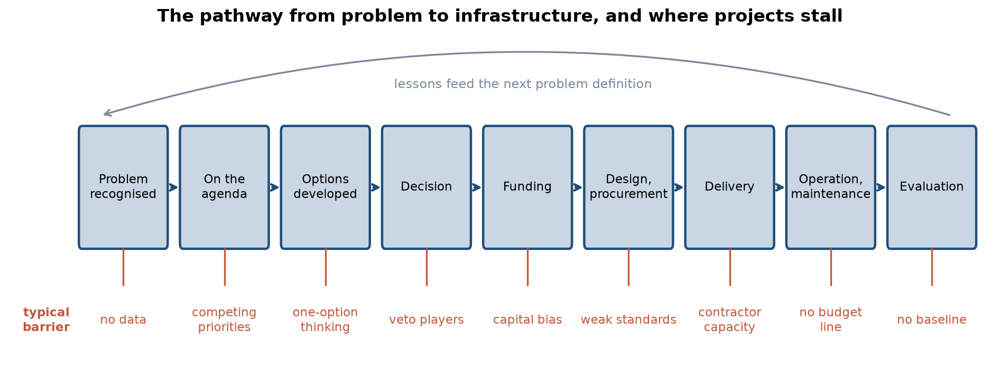
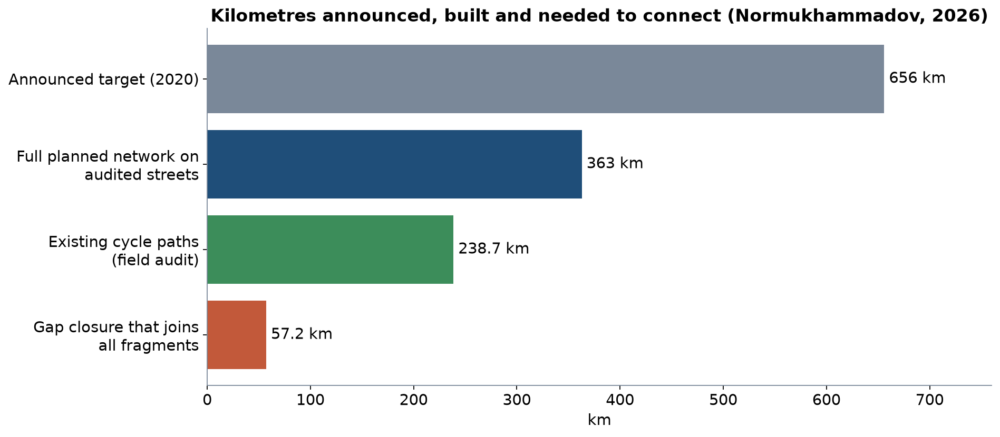

LEC23 · Urban Transport Systems Planning and Design · TSTU · Prof. J. Sodikov
1 / 21
What you will be able to do after today
Map the organisations that decide, fund, build, operate and use a corridor
Trace the pathway from a recognised problem to delivered infrastructure
Explain how institutional incentives and politics shape what gets built
Identify implementation barriers in your own corridor project
2 / 21
The last two weeks designed measures for a corridor; this week is about the people and organisations that can put them into practice. You will map the organisations that decide, fund, build, operate and use a corridor. You will trace the pathway from a recognised problem to delivered infrastructure, and explain how incentives and politics shape what gets built. Finally, you will identify the barriers to implementation in your own corridor project.
The urban transportation policy lens of a published course
Transportation policy is shaped by politics, governance structures and human and institutional behaviour
Social and environmental justice are part of the question, not an add-on
The pathway to infrastructure: how ideas become projects — or do not
How attitudes are influenced and how change happens
3 / 21
A published course on urban transportation planning and policy sees transport policy as shaped by politics, governance structures and the behaviour of people and institutions. Social and environmental justice belong to the question from the start. That course also asks how ideas become projects, or fail to, and how attitudes and practices change. This lecture uses the same lens for Tashkent.
Who is responsible for a corridor?
Actor
Typical role
What they control
National government and ministry
Strategy, standards, national funding
Laws, norms, programmes
Khokimiyat (city or district administration), city level
Planning, street design, local budget
Street space, parking, contracts
Traffic police
Traffic rules, signals, enforcement, crash records
Signal plans, fines, crash data
Public transport operator
Routes, timetables, fleet
Service quality and data
Road owners and maintenance enterprises
Construction and upkeep
Works programmes
Businesses and communities
Use the street; can support or block
Local acceptance
4 / 21
Many organisations share responsibility for one corridor. The national government sets strategy, standards and national funding, while the khokimiyat (city or district administration) at city level controls street space, parking and contracts. The traffic police control signals, enforcement and crash records, and the public transport operator runs routes, timetables and the fleet. Road owners maintain the street, and businesses and communities can support or block a project. These roles are indicative, so check the real ones for your corridor.
From problem to infrastructure

Each stage has its own gatekeepers; projects stall where no one owns the next step.
5 / 21
The figure shows the pathway from a recognised problem to infrastructure in nine stages, from recognising the problem to evaluation. Under each stage is a typical barrier, such as missing data, veto players, a bias towards capital spending or no budget line for operation. Each stage has its own gatekeepers, and projects stall where no one owns the next step. The arrow back to the start shows that lessons should feed the next problem definition.
The Highway Revolt in Boston
Boston's planned Inner Belt motorway would have cut through dense neighbourhoods
Residents, students and planners organised against it
The state cancelled most urban motorways and redirected funds to transit
Lesson: plans that put costs on communities can be reversed — late and expensively
Lesson: institutions changed — new rules for participation and environmental review
6 / 21
In Boston, a planned motorway called the Inner Belt would have cut through dense neighbourhoods. Residents, students and planners organised against it, and the state cancelled most urban motorways and moved the funds to transit. In a published course on urban transportation planning, the lecture on this case is given by someone who took part in the events. One lesson is that plans which put costs on communities can be reversed, but late and at high cost. Another is that institutions changed, with new rules for participation and environmental review.
Spending other people's money
Whoever pays sets the rules: funding programmes decide which projects are possible
Capital grants favour building new things over maintaining or operating them
Local leaders choose projects that attract outside money
Ask of every proposal: whose money, under which rules, for what result?
7 / 21
Whoever pays for a project sets the rules, so funding programmes decide which projects are possible. Grants for capital spending favour building new things over maintaining or operating them. Local leaders choose projects that attract outside money. For every proposal, ask whose money it uses, under which rules and for what result. Week 9 showed why maintenance matters, and Week 14 returns to financing.
Institutional behaviour
Agencies are measured by what they spend or build, not by outcomes
Each department optimises its own budget line
Election and budget cycles favour visible, quick projects
Risk aversion: no one is punished for doing nothing
Data are held by the institution that collects them — and shaped by its needs
8 / 21
Agencies are often judged by what they spend or build, not by the outcomes for people. Each department looks after its own budget line, and election and budget cycles favour quick, visible projects. Risk aversion adds to this: no one is punished for doing nothing. Data are held by the institution that collects them, and they are shaped by its own needs.
Tashkent: institutions at work
Targets, standards, data and research as institutional questions
9 / 21
The second part of the lecture looks at institutions at work in Tashkent. It treats targets, standards, data and research as questions about institutions.
What gets counted gets built

656 km announced in 2020; 238.7 km of cycle path audited (222.7 km in the routable network); 57.2 km of gap closure would join that network into one.
10 / 21
The chart compares four lengths from Normukhammadov's thesis. The city announced 656 km of pedestrian and bicycle lanes in 2020, and a complete planned network on the streets the thesis audited would be 363 km. The field audit found 238.7 km of cycle path, and the same paths measure 222.7 km in the thesis's routable network, the map used for route finding. New gap links of 57.2 km would join the separate fragments of that network into one. The announced target counts kilometres, but it says nothing about connecting what already exists.
Targets, ownership and the binding constraint
The gap-closure programme is only 8.7% of the announced 656 km
94% of it runs along existing sidewalks: the constraint is administrative, not money or land
Someone must reallocate the right-of-way and manage pedestrian–cyclist sharing
OSM records 8.4 km of cycle track against 238.7 km found in the field
The thesis asks the city to take custody of the audited inventory
11 / 21
The gap-closure programme is only 8.7% of the announced 656 km. Because 94% of it runs along existing sidewalks, the thesis argues that the main obstacle is administrative, not money or land. Someone must reallocate the street space and manage how pedestrians and cyclists share it. OpenStreetMap records 8.4 km of cycle track, while the field audit found 238.7 km. The thesis asks the city to take charge of the audited inventory.
Data as an institutional problem: the crash register
The register is designed for police case work, not for safety analysis
A four-week August gap left only 29 records; 136 duplicate rows were removed
Crash-type codes changed mid-year with no published key
Whoever designs the form decides which questions the city can ever answer
12 / 21
Tashkent's crash register was designed for police case work, not for safety analysis. In the TIP study's data, a four-week gap in August left only 29 records, and 136 duplicate rows had to be removed. The crash-type codes changed in the middle of the year, and no key to them was published. Whoever designs the record form decides which questions the city can answer later.
What the register lacks — and what it would enable
Element
Tashkent register (2016)
WHO / CADaS / MMUCC
Decision it would support
Road-user role of each casualty
Not recorded
Included
Pedestrian and cyclist safety targets
Death within a fixed window
No window recorded
30 days (WHO, CADaS)
Comparable fatality statistics
Light condition, speed limit
Not recorded
Included
Lighting and speed-management programmes
Seat position, restraint or helmet use
Not recorded
Included
Enforcement priorities
Identifiers for linkage to health records
None
Recommended or included
Checking under-reporting
13 / 21
The table compares the Tashkent register of 2016 with international standards such as WHO and CADaS. The register does not record each casualty's role, such as pedestrian or cyclist, or the light condition, speed limit, seat position, restraint or helmet use. WHO and CADaS count a road death within 30 days of the crash, but the register sets no time window. Each missing element would support a decision, such as safety targets for pedestrians and cyclists. The table works as a list of reforms the city can make.
Standards and the path from research to practice
Tashkent's street design norm does not regulate the spacing of pedestrian crossings
Streets rebuilt as experiments without a normative basis narrowed footways and cycle lanes; some lacked drainage and lighting
Pulatova's walkability index was put into practice by the Main Department of Landscaping of the city khokimiyat (city administration)
Research reaches practice when an institution owns the result
14 / 21
Pulatova (2024) reports that Tashkent's street design norm does not regulate how far apart pedestrian crossings should be. Some streets were rebuilt as experiments without a basis in the norms, and their footways and cycle lanes became narrower. Some of them also lacked drainage and lighting. According to a 2024 letter from the national Road Committee, the Main Department of Landscaping of the city khokimiyat (city administration) put Pulatova's walkability index into practice. Research reaches practice when an institution takes ownership of the result.
Strategy, finance and partnerships
TSTU work on road strategy: what a road agency should plan for, and how
National road development strategy: priorities set above the city
Public–private partnerships need fair concession value and clear risk allocation
Many PPPs fail when risks sit with the party least able to manage them
15 / 21
Prof. Sodikov's work covers road strategy: what a road agency should plan for, and how. Uzbekistan's national road development strategy sets priorities above the level of the city. Public–private partnerships (PPPs) need a fair concession value and a clear sharing of risks between the partners. Many PPPs fail when risks sit with the party least able to manage them.
Barriers to implementation
Barrier
Corridor example
Response
Legal
No norm allows a kerbside bus lane with loading
Pilot under a temporary order; update the norm
Financial
Capital for platforms, none for enforcement
Budget line for operation in the decision
Institutional
Police own signals, city owns the street
Joint working group with one project owner
Data
No counts, no crash locations
Baseline survey before the decision
Acceptance
Shop owners fear losing customers
Consult early, trial, publish results
16 / 21
The table names five kinds of barrier, with a corridor example and a possible response for each. A legal barrier, such as no norm for a kerbside bus lane with loading, can be met with a pilot under a temporary order. A financial barrier needs a budget line for operation, and an institutional one needs a joint working group with one project owner. Data gaps call for a baseline survey, and acceptance problems call for early consultation and trials. You will fill this table for your own corridor in P12.
Working structures (SUMP guidelines)
Set up a core team with a clear project owner
Agree roles with every authority that controls part of the street
Plan participation from the start, not after the design is fixed
Link the project to the city's plan, budget and monitoring cycle
17 / 21
The SUMP guidelines describe how to organise the work. Set up a core team with a clear project owner, and agree roles with every authority that controls part of the street. Plan participation from the start, before the design is fixed. Link the project to the city's plan, budget and monitoring cycle.
Discussion
For your corridor: which single organisation could stop your preferred alternative — and what would it need to say yes?
Answer with a name of an institution, an interest and an offer.
18 / 21
This question asks you to name the one organisation that could stop your preferred alternative. Then state what that organisation would need in order to say yes. Answer with the name of an institution, its interest and an offer you could make to it.
Key takeaways
Infrastructure is delivered by institutions; every stage of the pathway needs an owner
Funding rules and performance measures shape what agencies build
Data and standards are institutional choices with long consequences
Name the barrier — legal, financial, institutional, data or acceptance — and plan for it
19 / 21
Institutions deliver infrastructure, so every stage of the pathway needs an owner. Funding rules and performance measures shape what agencies build. Data and standards are choices made by institutions, and their effects last a long time. Name each barrier, whether legal, financial, institutional, data or acceptance, and plan how to deal with it.
References
MIT Department of Urban Studies and Planning. 11.540 Urban Transportation Planning and Policy (J. Aloisi). MIT Course Catalog, Course 11 subjects. https://catalog.mit.edu/subjects/11/
van Wee, B., Annema, J. A., Banister, D., & Pudāne, B. (Eds.) (2023). The Transport System and Transport Policy: An Introduction (2nd ed.). Edward Elgar. https://rstrail.nl/the-transport-system-and-transport-policy-an-introduction/
Salvucci, F. (2016). 1.252J/11.540J Urban Transportation Planning, Fall 2016. MIT OpenCourseWare. https://ocw.mit.edu/courses/1-252j-urban-transportation-planning-fall-2016/
Normukhammadov, A. (2026). Pedalling Towards Sustainability: Developing an Integrated Bicycle Network for Enhanced Urban Mobility in Tashkent City (PhD thesis draft; supervisor J. I. Sodikov). Tashkent State Transport University.
Sodikov, J. I., et al. (under review). Odds of recorded death among police-recorded road-traffic casualties and register data quality in Tashkent, Uzbekistan. Traffic Injury Prevention (revision r4).
Sodikov, J. I., et al. (2022). Developing novel registration of road traffic accidents. Communications — Scientific Letters of the University of Žilina.
Pulatova, Z. S. (2024). Walkability assessment of Tashkent city districts (PhD dissertation, in Uzbek; supervisor J. I. Sodikov). Tashkent State Transport University.
Sodikov, J. I. (2023). Road strategy for a road agency (in Russian). Article.
Sodikov, J. I. (2018). Road development strategy of the Republic of Uzbekistan (in Russian). Preprint.
Sodikov, J. I. (2019). Literature review of fair concession value and risk allocation models in PPP projects. Article.
Sodikov, J. I. (2018). PPP Uzbekistan. Article.
Rupprecht Consult (Ed.) (2019). Guidelines for Developing and Implementing a Sustainable Urban Mobility Plan (2nd ed.). European Commission / Eltis. https://www.eltis.org/mobility-plans/sump-guidelines